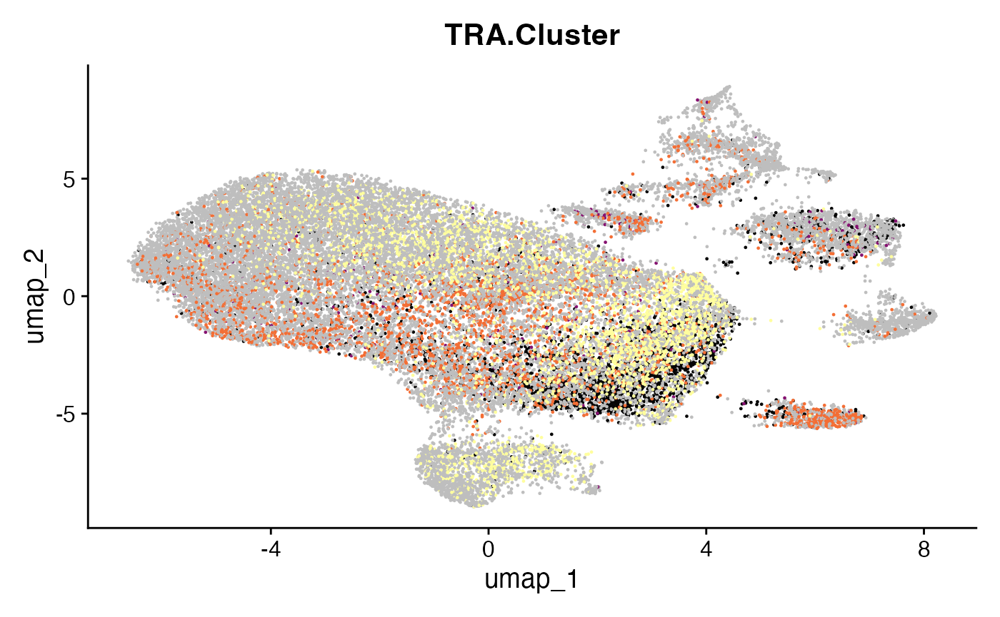

Clustering by Edit Distance
Compiled: May 04, 2024
Source:vignettes/articles/Clonal_Cluster.Rmd
Clonal_Cluster.RmdclonalCluster
The nucleotide or amino acid sequences of the chains can be used to
cluster clonotypes by examining the edit distance of the sequences. This
approach is underlying the combineBCR() function but now
can be applied to the B or T cell receptors at the level of nucleotides
(sequence = “nt”) or amino acids (sequence =
“aa”). It will add a cluster to the end of each list element by
generating a network connected by the similarity in sequence. This
network is directed by the threshold variable, where
0.85 is the normalized mean edit distance.
Edit-distance based clusters will have the following format:
- [chain:] + :Cluster + [number] e.g., TRA:Cluster.1
Cluster denotes if the cluster was called using the normalized Levenshtein distance, which takes the edit distance calculated between 2 sequences and divides that by the mean of the sequence lengths. Unconnected sequences will have NA values.
Basic use
sub_combined <- clonalCluster(combined.TCR[[2]],
chain = "TRA",
sequence = "aa",
threshold = 0.85,
group.by = NULL)
head(sub_combined[,c(1,2,13)])## barcode sample TRA_cluster
## 1 P17L_AAACCTGAGGTGTTAA-1 P17L TRA:Cluster.32
## 2 P17L_AAACCTGCACGTTGGC-1 P17L <NA>
## 3 P17L_AAACCTGGTACGACCC-1 P17L <NA>
## 4 P17L_AAACCTGGTTCGCTAA-1 P17L <NA>
## 5 P17L_AAACCTGTCAGCACAT-1 P17L TRA:Cluster.15
## 6 P17L_AAACCTGTCCGGCACA-1 P17L <NA>Clustering with a single-cell object
If performed over the number of samples, such as the list elements,
group.by can used to calculate only the clusters on the
setting of patient sample (group.by = “Patient”) or
tissue type (group.by = “Type”). This will add the
selected group to the beginning of the cluster designation. We can also
call clonalCluster() directly on a Single-Cell Object. If
group.by = NULL (default), the
clusters will be calculated across all samples.
#Adding patient information
scRep_example$Patient <- substr(scRep_example$orig.ident, 1,3)
#Adding type information
scRep_example$Type <- substr(scRep_example$orig.ident, 4,4)
#Define color palette
colorblind_vector <- hcl.colors(n=7, palette = "inferno", fixup = TRUE)
scRep_example <- clonalCluster(scRep_example,
chain = "TRA",
sequence = "aa",
threshold = 0.85,
group.by = "Patient")
DimPlot(scRep_example, group.by = "TRA_cluster") +
scale_color_manual(values = hcl.colors(n=length(unique(scRep_example@meta.data[,"TRA_cluster"])), "inferno")) +
NoLegend()
Using clonalCluster(), we can also return an igraph
object of all the related sequences using exportGraph =
TRUE. The returned igraph object contains only the sequences that have
at least one connection with another sequence. The igraph can then be
directly visualized (below) or used for downstream analysis (see the
igraph website).
Returning an igraph object:
#Clustering Patient 19 samples
igraph.object <- clonalCluster(combined.TCR[c(5,6)],
chain = "TRB",
sequence = "aa",
group.by = "sample",
threshold = 0.85,
exportGraph = TRUE)
#Setting color scheme
col_legend <- factor(igraph::V(igraph.object)$group)
col_samples <- hcl.colors(3,"inferno")[as.numeric(col_legend)]
color.legend <- factor(unique(igraph::V(igraph.object)$group))
#Plotting
plot(
igraph.object,
vertex.size = sqrt(igraph::V(igraph.object)$size),
vertex.label = NA,
edge.arrow.size = .25,
vertex.color = col_samples
)
legend("topleft", legend = levels(color.legend), pch = 16, col = unique(col_samples), bty = "n")